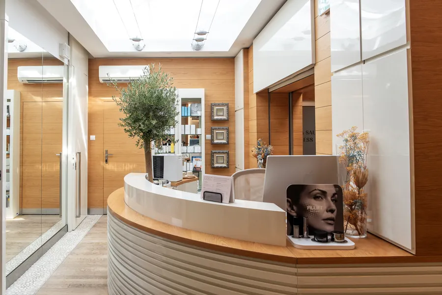
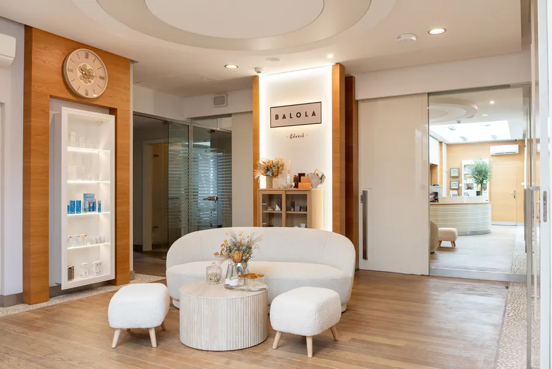
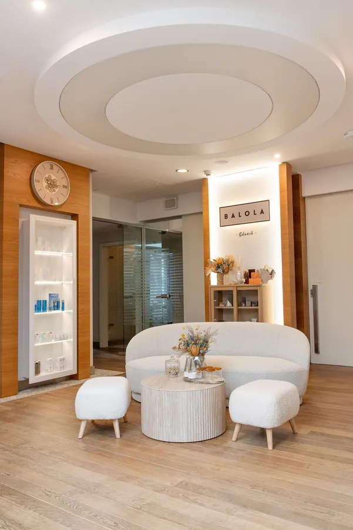
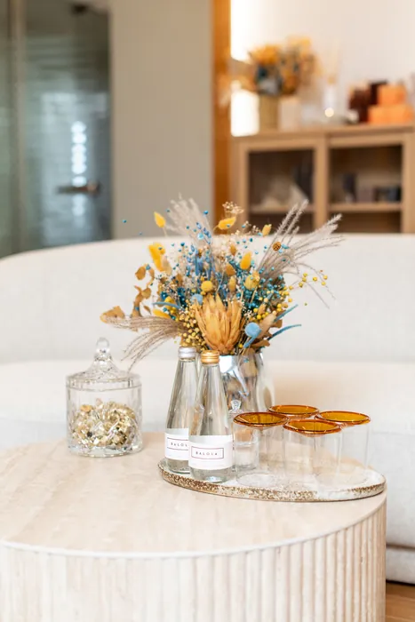
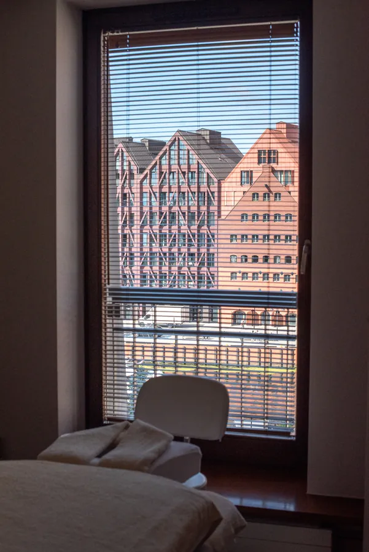
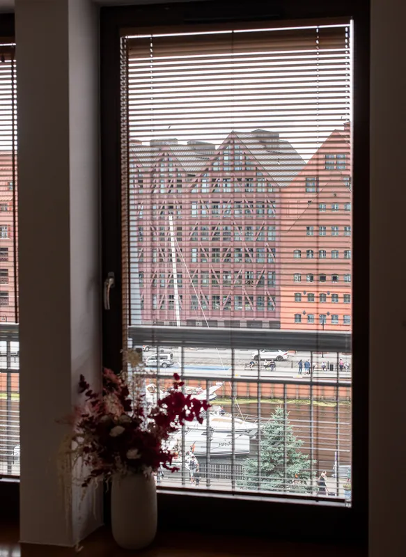
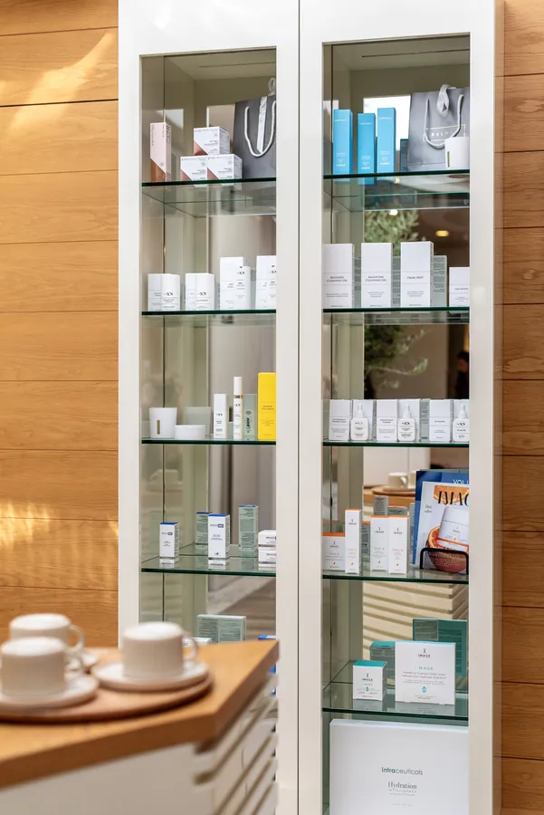
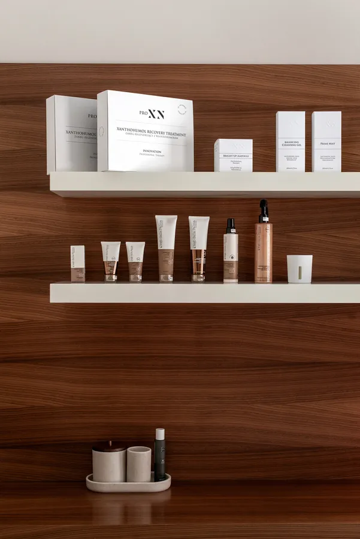
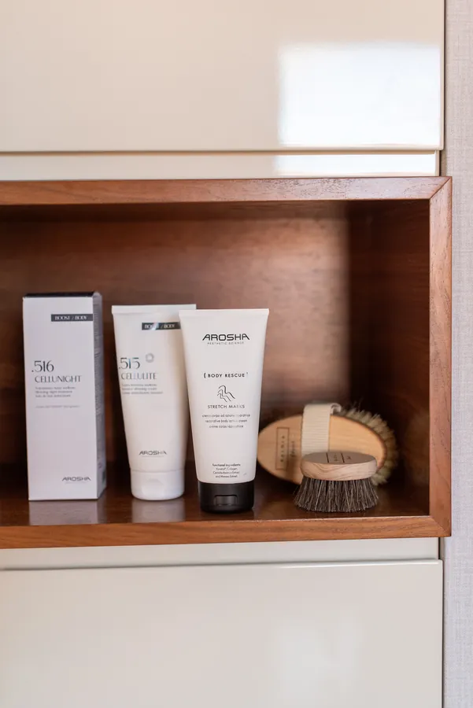

Wnętrza
Piąte piętro Hotelu Gdańsk Boutique: ciepłe drewno, bouclé, suszone kwiaty i widok na Motławę. Zobacz, gdzie odpoczniesz.

Recepcja i strefa wypoczynku
Tu zaczyna się każda wizyta: drewniana lada, oliwne drzewko, sofy bouclé i suszone kwiaty.






1 / 6
Gabinety
Ciepłe światło, drewno i okna z widokiem na spichlerze nad Motławą.




1 / 5
Półki z kosmetykami
Profesjonalne kosmetyki, na których pracujemy. O pielęgnację domową zapytaj po zabiegu.






1 / 6
Strefa saun na wyłączność
Jeśli korzystasz u nas z zabiegu, po wcześniejszej rezerwacji cała strefa saun jest tylko do Twojej dyspozycji. Połącz zabieg z saunami i zaplanuj u nas całe popołudnie albo wieczór.
- Trzy sauny
- Prysznic
- Strefa odpoczynku z wodą
- Ręczniki, szlafroki i klapki
- W razie potrzeby jednorazowa bielizna
Jesteśmy otwarci także w soboty, niedziele i wybrane święta.